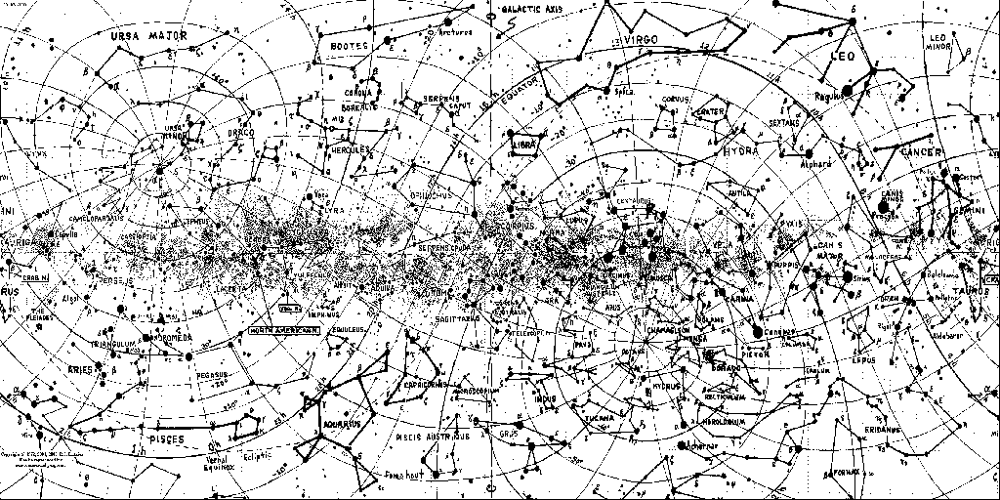
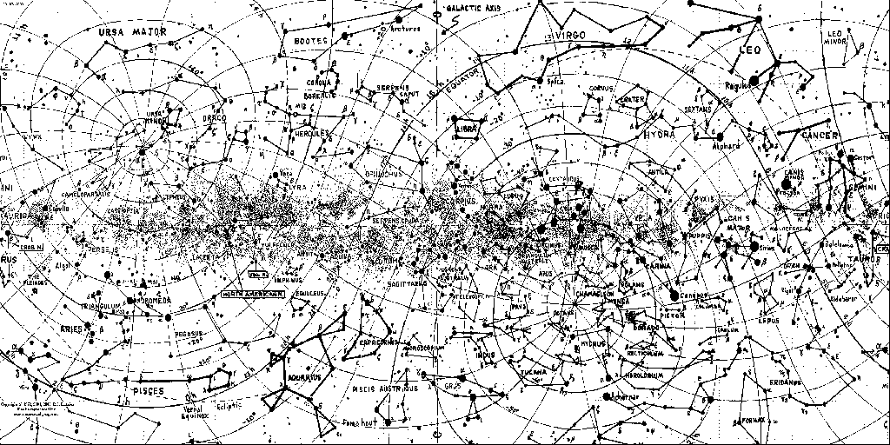
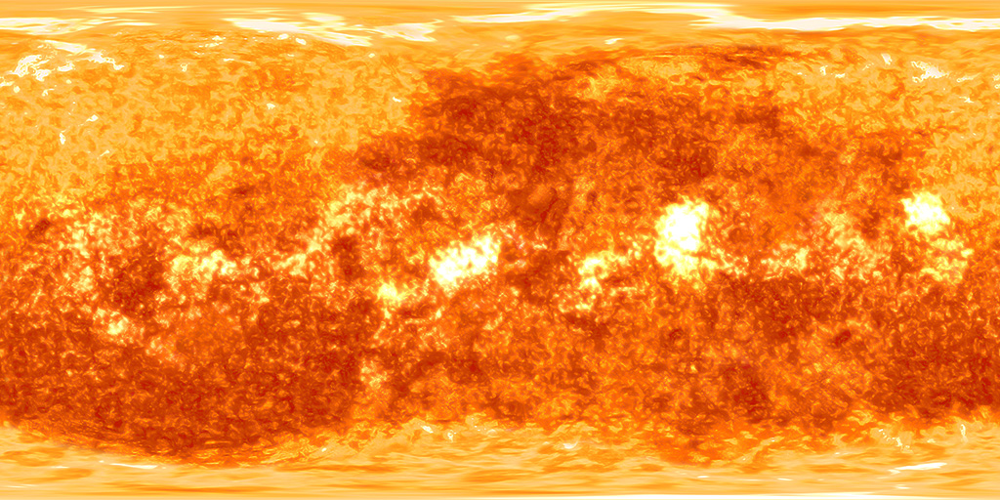
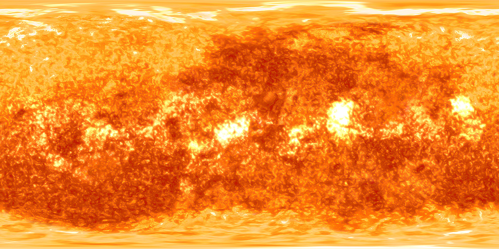
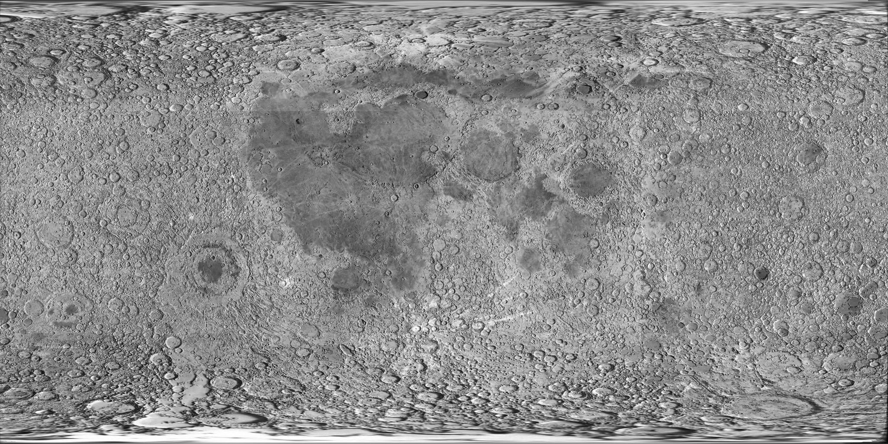
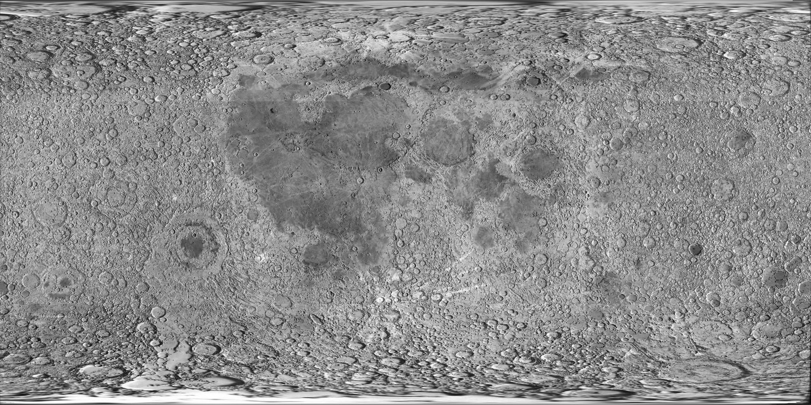

Individual Elements and Design Process:
I've chosen to organize this section of my project chronologically. I added each element of the book-scape in the following order, often building upon components that already existed:
Path and Columns:

The first elements that I represented or adapted for the book-scape were the "path" and columns. Although the original title page did not have a path that moved "backwards" into the sea in the scene, I decided that, as a 3D representation, my book-scape ought to add this dimension. I then chose to recreate the columns, shown above, along my path. While most of the column is made from the same "rock" material/bump map as the path, the books used in the column are texture mapped with a page texture and book cover texture.
The path and columns were made using mathematical modeling, as well as texture mapping. The stone texture used is saved in two forms - one rectangular and one triangular, made using Photoshop's perspective crop tool, - so that they could easily be mapped onto BoxGeometry objects and cones made with CylinderGeometry. Below are pictures of the path and columns, along with the stone textures used. Not shown are the book cover and page textures I used to create the book objects that stack on top of one another in the columns. Each book is generated in a method call to makeBook(), and the function makeStack() creates the stacks used in the columns. To maintain the correct y-value for each new component of the columns, I used a counter that ran throughout the method and could be updated, then called in position.set to construct the complete Object3D.
The BoxGeometry used to create the path is modified using the addTextureCoords(pathGeom) function provided by the professor in Assignment 5, the texture barn. This was done so that the same rock/bump texture could be mapped onto all sides of the box, although they differ drastically in proportion.


Celestial Bodies and Lighting:

Next I added the four spherical, celestial objects in my scene. On the title page of "De Augmentis scientiarum", there are two Earths labeled with the Latin: "Mundus Visibilis" and "Mundus Intellectualis", or "The Visible World" and "The Intellectual World". Also shown are a stylized sun and moon (shown above). To create these objects, I texture mapped a picture of the Earth stretched into a rectangle, a rectuangular map of constellations onto the two Worlds, and rectangular stretched images of the sun and moon onto the latter two objects.
The planets are animated to rotate around each other, and around set points, using several layered Object3Ds: solar, terra, earthSystem, and lunar - lunar contains the moon; terra the two worlds and lunar; earthSystem holds terra and the starSystem; and solar contains the sun. The worlds - visibilis and intellectualis - and the solar frame all rotate individually around the y-axis, terra rotates around solar about the z-axis, and lunar rotates in terra around the x-axis. Below are pictures of each sphere, along with the texture used.


 

 

 

My initial drawings and models for this project were rectangular spaces with proportions to match that of the book page, in the X and Y directions. The height of the page is double the width, and the first Z values were the square of height (200x400x1600). This was meant to create a strong perspective down the path, but, in reality, it significantly restricted the realism that I could achieve in the scene. My later model, a hemisphere, is still not necessarily realistic, but it is much better suited to the scene. Below are some pictures of my initial design:


The star system was created using an adapted version of Dirksen's chapter 7 function createSystem(). In the adapted method, spherical coordinates are used to set x, y, and z coordinates of several particles so that they all rest on the surface of a sphere of a given radius. The system is made by creating several spheres that radiate out from the center point of earthSystem so that the star spheres wrap around and through the worlds and the moon.


The final version of the star system uses the coordinate ranges: 0 <= theta <= Pi, 0 <= phi <= Pi/2, and rho = radius to construct several quarters of a sphere (or halves of a hemisphere) populated with "stars".
The scene is lit using three light sources: a low, ambient light set up in the HTML, a directional light set in front of the title page to illuminate the illustration and to seep into the scene, and a spotlight placed in the sun that lights up exactly half of the hemisphere at any given time. The sun's light rotates with the other systems so that it always points opposite the worlds and moon. The images below show the book-scape's more dramatic lighting:


A Path to Nowhere - Adding the Temple:
The next element I added to my scene was a circular temple at the end of the path. In the original title page, there is neither a path nor a temple - rather, the viewer looks out to sea where a boat floats. Although I added depth to my path, I initially didn't think I would place anything at the end of it, out in the water. After getting feedback along of the lines of "you have a path leading nowhere, though, I decided to create my own destination.
The temple I built is the amalgamation of three stacked cylinders, twenty columns, and a cylindrical cone roof. All features are texture mapped with the same rock/bump texture as the path, and the first base of the temple was added so that it fits smoothly onto the end of the path, and so that the columns, resting on the third raised, cylindrical base, have an opening that is approximately the width of the path. The rectangular path texture was used on all components of the temple excluding the roof, which uses the triangular wall texture (created with the perspective crop tool in Photoshop). If I continue to develop the scene, I will consider improving how the rock texture is mapped onto the cylindrical bases. I'm not entirely satisfied with the effect (shown below).
I built the temple as I did the columns - by maintaining a current height as each new element was added, and using this height counter to position the new element on the y-axis. Each column was constructed, oriented a radius distance (of the base) minus its radius in the Z direction, then added to a new Object3D container and rotated the appropriate distance around the base. In my animation, the user can navigate "into" the temple so that she can look through the columns at its back and see, in detail, its texture/bump mapping. Pictured below, from several angles, is the temple:


Note: The final picture of the temple's interior was taken after a perspective camera was set up.
The Owl:

As I began to run out of time developing my project, I had to choose between adding the boat or adding the owls that, on the original page, rest on the ground holding torches. I chose to model the owls next, not only as an opportunity to create an interesting animation, but also because the owls are likely meant to symbolize Athena, the Greek Goddess of Wisdom, as they are placed on the cover of a book entitled: "Of the Advancement and Proficience of Science".
I decided to build a single owl that would rest on top of the temple and, in an animation set to deploy when certain keys are pressed, fly up and forward or backwards and down. In these flights, I intended for both the owl's position and the rotation/size of its wings would change.
The makeOwl() function I defined invokes several helper methods that create the owl's head, legs, and wings. The owl's body is created in the makeOwl() function itself. Each part of the owl's body is modeled, as the clown was, by combining several Object3D containers in one web of embedded frames.
I animated the owl's wings not only by rotating the left and right wing containers, but also by alternating between nine different wings - each a Bezier surface - that give the illusion of an owl spreading and reaching its wing's upward. As the owl's wings rotate, the different wings are accessed from two arrays of left and right wings created in the makeOwl() method from nine different makeWing() methods. The current wing has its visible attribute set to true, while all other wings have their visible attribute values set to false.
The owl is animated so that the solar and owl animations are constantly running, but the owl will only move when the 'r' or 't' keys are pressed. If the wrong key is pressed, if, for example, the owl has already risen and the 'r' key is pressed again, nothing will happen. The only way I currently know of to crash the program is to click either 'r' or 't' while the owl is already in flight. If this happens, the best solution is to refresh the page and re-enter the scene. Pictured below is the owl, by itself and on the temple, as well as the two feather textures used for the body and wings:


Perspective Camera:
Before adding the temple, owl, and owl animation to the book-scape, I modified the setupCamera() function used in Assignment 3 to create a perspective camera particularly suited to the scene. The camera is placed so that, initially, a user can see the complete page just above "ground" (y=0) level. As the user navigates into the scene with 'w', the camera adds an increased sense of depth and distance to the path, as well as to the owl and temple at the end. Using the user interaction methods defined in setupCamera(), the user is able to adjust the camera's y-position ('u' and 'o'), where in the y-direction the camera is looking ('i' and 'k'), and rotate the camera ('j' and 'l'). Shown below are pictures of the complete book-scape with the increased perspective provided by the camera:


Thank you!
Thank you for taking the time to read about my project! If you have any further questions, comments, or suggestions, please consult my code or email me at emcnair@wellesley.edu as appropriate.
Works Cited:
Book Citation:
Bacon, Francis. "De Augmentis scientiarum: of the advancement and proficience of learning, or the partitions of sciences, IX books. Written in Latin by the most eminent, illustrious & famous Lord Francis Bacon ... Interpreted by Gilbert Wats." Oxford: Printed by Leon: Lichfield, Printer to the University, for Rob: Young, & Ed: Forrest, 1640. Wellesley College Library, Special Collections.
Texture Citations:
- Book Cover Texture: http://www.onlygfx.com/wp-content/uploads/2015/11/painted-red-fabric-texture-1024x702.jpg
- Ocean/Sky Texture: https://sambirkbeck.files.wordpress.com/2012/03/img_2009.jpg
- Rocks Texture: https://s-media-cache-ak0.pinimg.com/originals/f1/b7/a7/f1b7a7d4b7f1d2365ffbab5765f02ea6.jpg
- Page Texture: http://media.istockphoto.com/photos/old-book-paper-background-macro-of-spine-pages-folded-stack-picture-id488557061?k=6&m=488557061&s=170667a&w=0&h=9BDFOi9fPUl0KwMXhW1Nrq73aeHzMCaElxmKuKL9_Xw=
- Sun Texture: http://www.solarsystemscope.com/nexus/content/planet_textures/texture_sun.jpg
- Earth Texture: https://svs.gsfc.nasa.gov/vis/a000000/a003600/a003615/flat_earth_Largest_still.0330.jpg
- Constellation Texture: https://s-media-cache-ak0.pinimg.com/originals/e0/7d/5c/e07d5c0c69ea684e8260fabe1d176ceb.gif
- Moon Texture: http://iss-transit.sourceforge.net/j2ee-consultants/WorldView/moon2048x1024.jpg